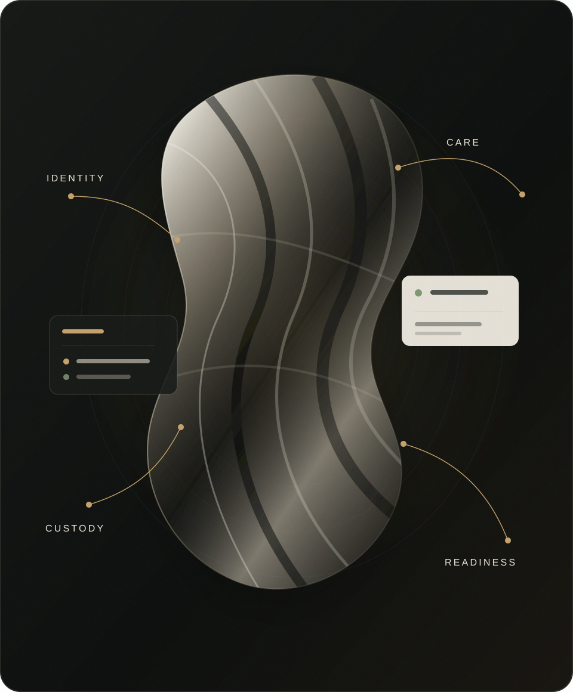

Observe
Staff input, item identifiers, images, documents, provider events and selected sensors become source-linked evidence.
Private wardrobe operations, reimagined
Zallia is the AI-native operating system for high-value wardrobes—connecting physical observations, care, custody and readiness so trusted teams can act with confidence.

The system
Most software knows only what someone last recorded. Zallia is being built to maintain a current, attributable picture of every important piece as it moves through use, care, travel, storage and specialist providers.
One operational picture
Zallia gives staff one place to understand what exists, where it is, what requires care and what must happen before a journey, event, transfer or service deadline.
Friday · Milan
Request the return inspection. Continue unrelated preparation while acceptance remains unresolved.
Intelligence with discipline
A scan is not proof of condition. A provider saying “complete” is not proof of accepted return. An administrator is not always authorised to alter a hired garment.
Zallia preserves those distinctions. It asks for the missing evidence or approval required for one action while allowing other, adequately supported work to continue.
Source, time and observation quality remain attached to consequential state.
Identity, permissions and restrictions are checked at the execution boundary.
Capture and deployment choices are bounded for high-trust environments.
The category
Zallia begins with private wardrobe operations and readiness. The same foundation can support professional care, costume, rental and other high-value wearable workflows where physical state, permissions and deadlines must remain coherent.
An active workflow MVP exists. The integrated sensing and production system remains under development and validation.
Private preview
We are speaking with private-service operators, wardrobe and textile-care specialists, potential design partners, technical collaborators, investors and accelerators.
Start a confidential conversation